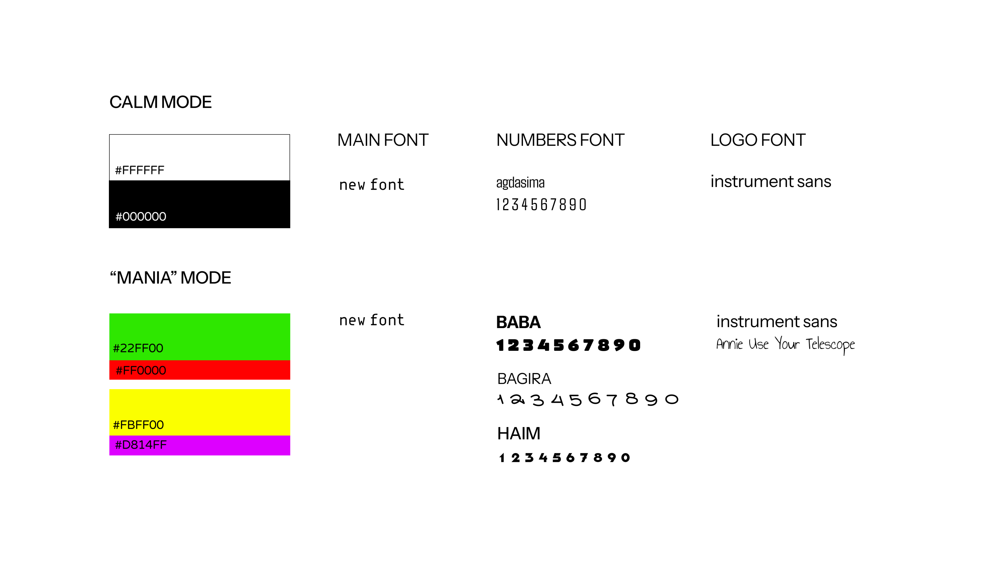
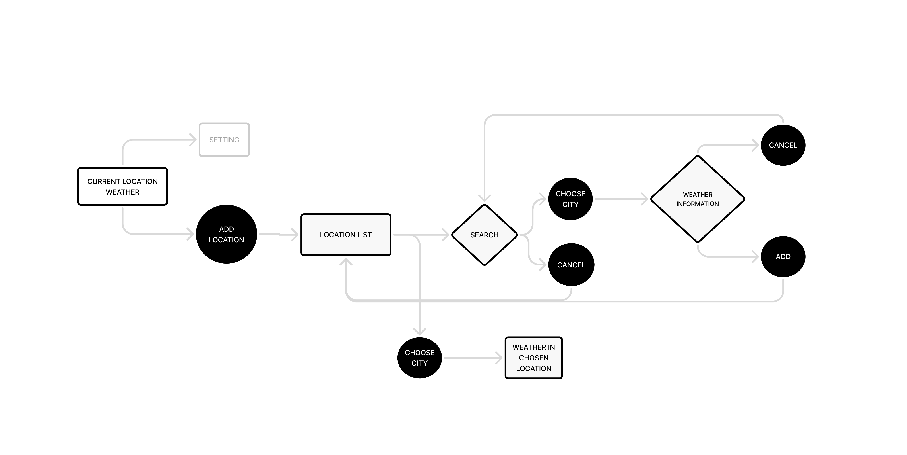
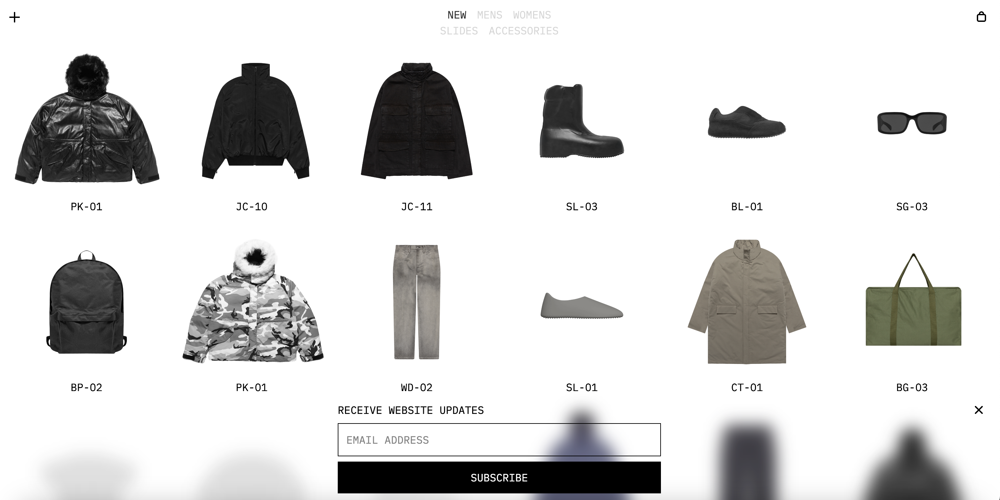
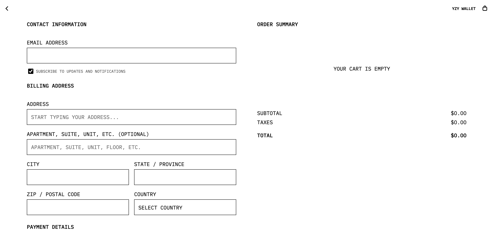
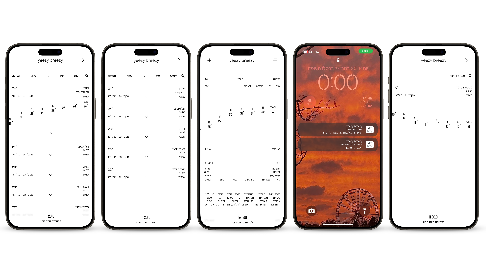
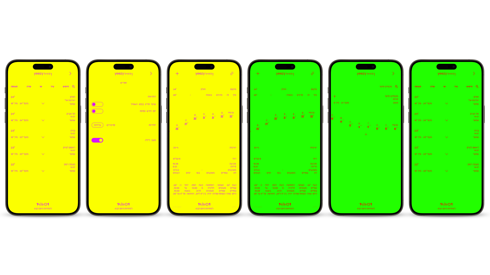

Yeezy Breezy · 2026
Yeezy
Breezy
Weather app inspired by Kanye West
Who is Kanye?
He is an American rapper, fashion designer, music producer, and entrepreneur. First came to prominence as a producer for the record company Roc-a-Fella Records in the early 2000s. He is famous for having absolutely no filter and staying in the headlines for all the wrong reasons. Between his impulsive outbursts and his public struggles with bipolar disorder, he has become the ultimate example of a celebrity who lives for controversy.
What makes him like this?
In 2020, Kanye claims he suffers from bipolar disorder, which causes his behavior, but in 2025, he states that his diagnosis was wrong and that he is autistic.
How is this reflected in the app?
In the app, you can only see the weather for the current day. The next day will only be revealed at midnight. There is an element of surprise — you never know what will come, like with Kanye. In addition, I added a feature of the reliability percentage of the weather — is it stable or may change at any moment?
There are two modes in the app: on the one hand, calm, pleasant to the eyes, clean colors; and the second mode is mania. The use of contrasting colors creates a feeling of discomfort in the user and the "annoying" color change as the day progresses — the change becomes more frequent and cannot be interrupted, like with Kanye who does not control his moods.
For the design itself, I chose to draw inspiration from Kanye's design side, which, unlike his character, is very clean and minimalist.
Tools Used

yeezy breezy






